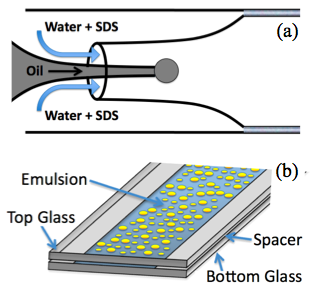
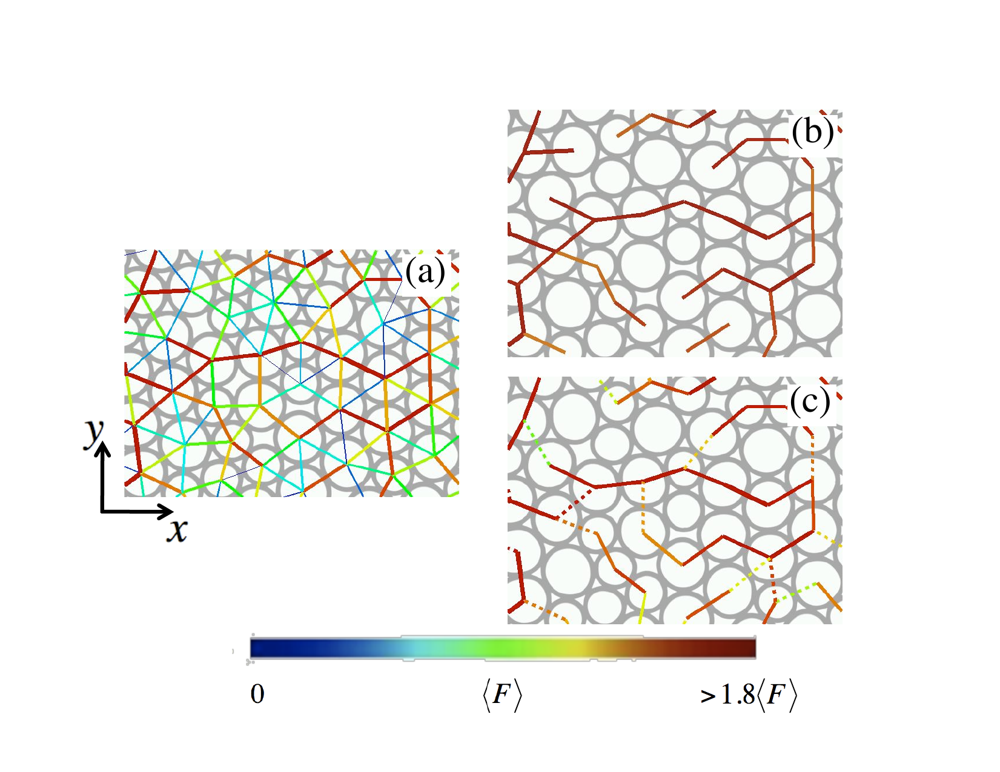
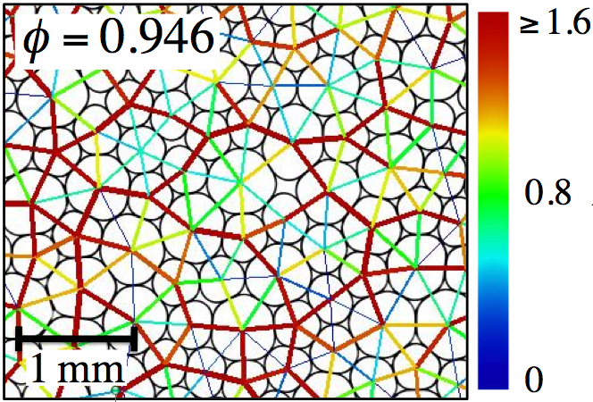
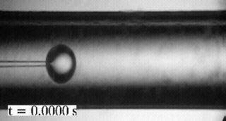
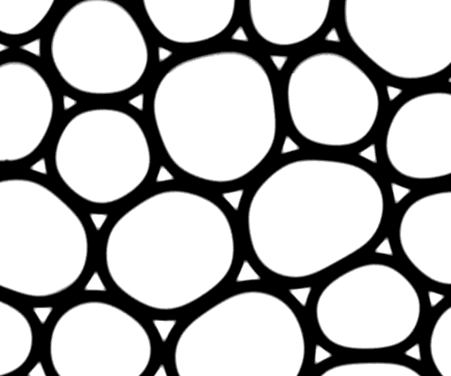
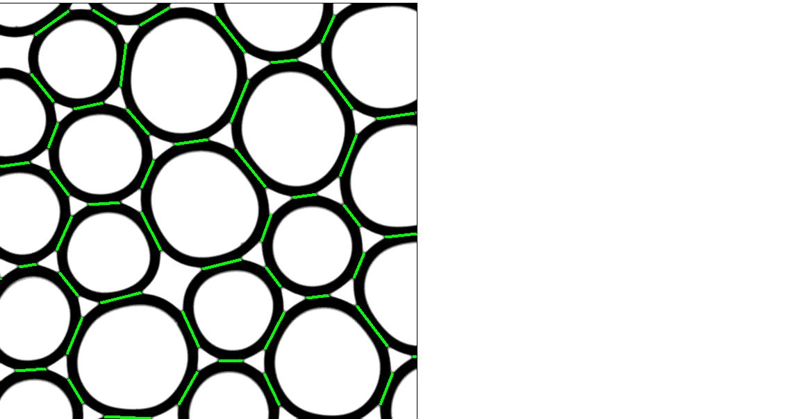
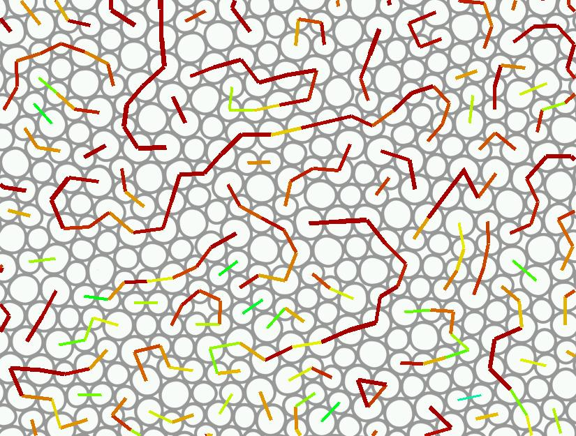

How do soft, deformable particles transmit forces when they are packed together? This experiment answers that question by creating a model system of oil-in-water emulsion droplets squeezed between two glass slides into a quasi-two-dimensional layer. Because the droplets deform slightly at every contact, their shape encodes the force each neighbor exerts — a bit like reading stress from a squeezed orange. By tracking those deformations across many droplets simultaneously, we measured the complete contact-force network at packing fractions ranging from just above the jamming point all the way to dense, highly compressed states.

Near the jamming transition, both the average contact number per droplet and the pressure scale as power laws in the excess packing fraction (φ − φc), in quantitative agreement with simulations of frictionless soft disks. This is a striking result because real emulsion droplets are deformable, compressible objects — yet they jam like ideal frictionless particles.
We also mapped out the full statistics of the force-chain network. Force chains — the thread-like pathways of large forces that run through a jammed material — are visually striking but poorly understood. Our measurements confirmed a previously untested theoretical assumption: that the orientations of force-chain segments are statistically uncorrelated with each other. This validates the Brujić–Zhou model, which predicts force-chain statistics from just two physical ingredients — force balance and spatial randomness.


Droplets are produced by microfluidics to achieve a controlled size distribution, then loaded into a thin (∼100 µm) chamber formed by two parallel microscope slides. Because each droplet is larger than the gap, it flattens into a lens shape — a quasi-2D geometry that allows imaging of the full packing in a single focal plane. From the deformed perimeter of each droplet, we extract the contact forces to within 8% uncertainty — significantly better than prior foam-based experiments and comparable to photoelastic disk studies in granular physics.

Microfluidic droplet production: oil is pumped through a micropipette centered inside a capillary; the surrounding soap-water flow pinches off droplets of uniform size. This co-flow technique produces the monodisperse or bidisperse droplets used in jamming experiments.


